準備まだ、パーツの中身は見ない。
- 練習航海用の航海ボードを使う
- 宇宙船ボードはレベルⅠの面を使う
- スタート用船室をボード中央へ
- 同色のロケットを2個取る
- 1個は宇宙船ボード、もう1個は航海ボードの駐機場へ
- 全パーツを裏向きで混ぜる
- 合図と同時に、全員で建造を始める
ゲーム03 / 新人トラッカー訓練
建造。出発。そして生還。
宇宙船をつくれ。飛ばせ。できれば、無事に帰ってこい。
ランダムなパーツをつなぎ、貨物を積み、8枚のアドベンチャーを突破する。
遊び方を見る↓今回の任務 / 5ステップ
練習航海
01 / 宇宙船建造
次のパーツを取った瞬間、直前のパーツは移動・回転・取り外し不可。
必須 / コネクタ
接するすべての面が正しければ置ける。
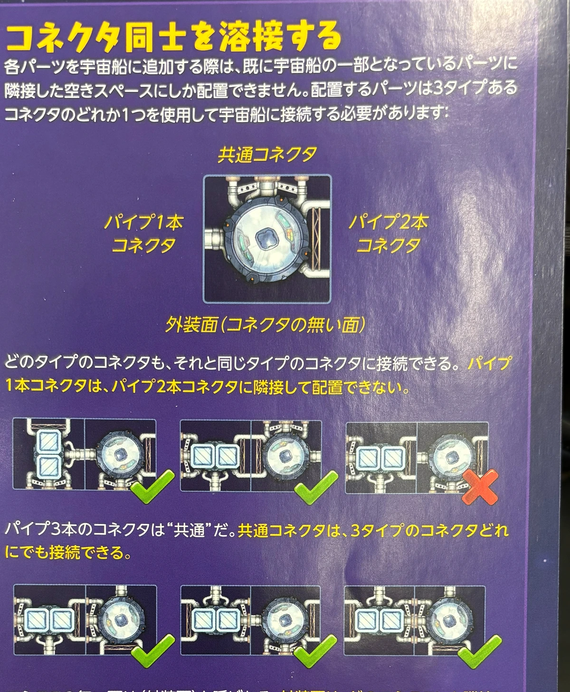
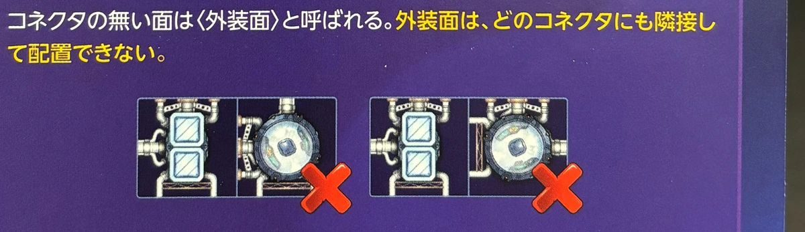
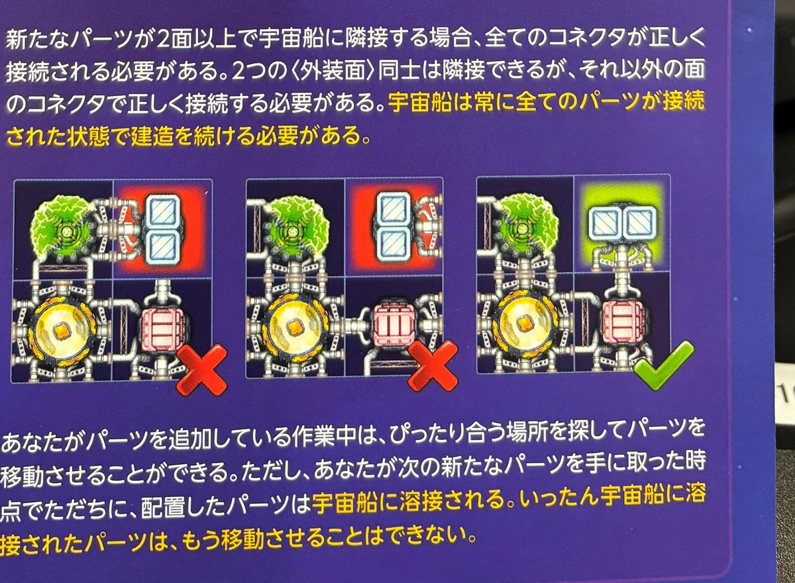
接続できる？
露出コネクタ
端は露出させないほうが良い。 露出コネクタは宇宙塵で航海日数が増え、「最も美しい宇宙船」の判定にも不利。02 / パーツ
役割だけ確認。詳細は必要なパーツを開く。
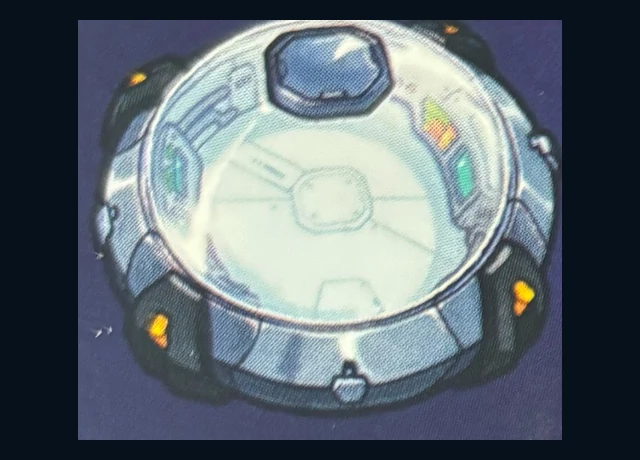
船室乗組員を乗せるスタート用船室も1室。初回航海では異星人を使わない。
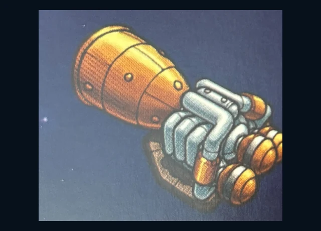
エンジン推進力を生む後ろ1マスは必ず空ける。通常 +1。ダブル +2、使用時にバッテリー ×1。パワー計算時は通常型をすべて数え、使用するダブルを選ぶ。
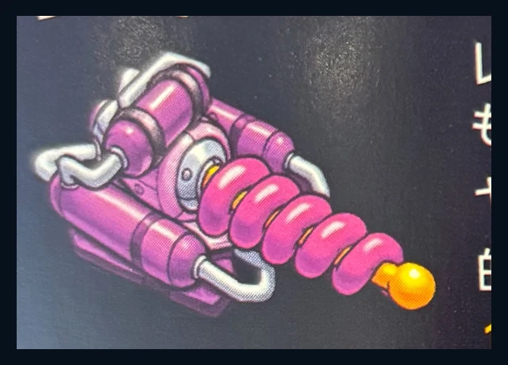
レーザー砲攻撃力を生む通常：前 +1／横・後 +0.5。ダブル：前 +2／横・後 +1、使用時にバッテリー ×1。通常型はすべて数え、使用するダブルを選ぶ。0.5は丸めない。
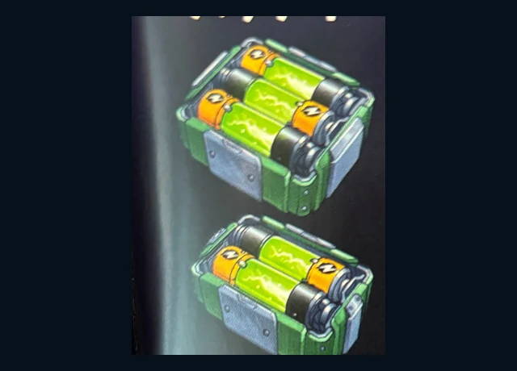
バッテリー装備を動かすダブルエンジン、ダブルレーザー、シールドを使うたび1個消費。対象装備と隣接不要。
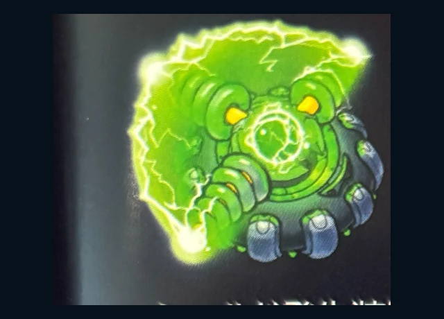
シールド2方向を守るバッテリー ×1。小流星と弱レーザーは防げる。大流星と強レーザーは防げない。
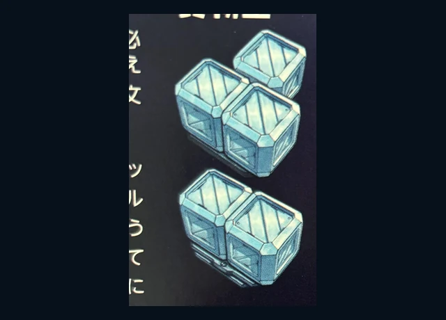
貨物室商品を保管する赤は特別貨物室だけ。通常貨物室には置けない。特別貨物室には赤以外の商品も置ける。
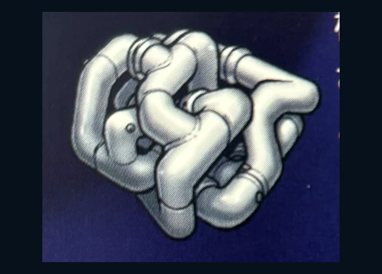
構造モジュール船体をつなぐ多数のコネクタ、とくに共通コネクタで船体をまとめる。初回航海では、紫・茶色の生命維持システムも構造モジュールと同じように扱う。
全部ほしい。
全部は入らない。
03 / 出発前点検
建造を終えたら、全員で確認。
練習航海では罰金なし。必要ならロケットを駐機場へ戻して修理を続け、後ろのプレイヤーは順位を詰める。
完成したらロケットを、空いている最も若い順位へ。早く作れば前。でも速さだけでは生き残れない。
乗組員と電池を積む
04 / 出発
レベルⅠデッキから、練習航海マーク付きの8枚を選び、裏向きでシャッフルする。
航海ボードは「現在の位置関係」追い越したら先頭プレイヤーも変わり、残りの冒険カードの束を新しい先頭へ渡す。
航海日数 3日空きスペースを3つ数えて後退。他のロケットがいる場所は飛ばす。複数人は後ろから処理。
カードが出たら確認
カードが出たら、その名前だけ開く。
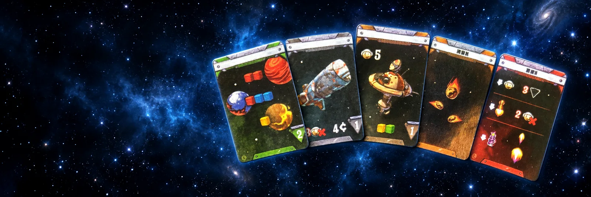
流星・レーザー防御
外装面なら跳ね返す。露出コネクタへの直撃は、その方向のシールド＋バッテリー1個で防ぐ。
シールド不可。同じコース上で飛来方向を向くレーザー砲で撃墜する。ダブルならバッテリー1個。
攻撃方向を守るシールド＋バッテリー1個で防ぐ。
防御不可。命中したパーツを破壊する。
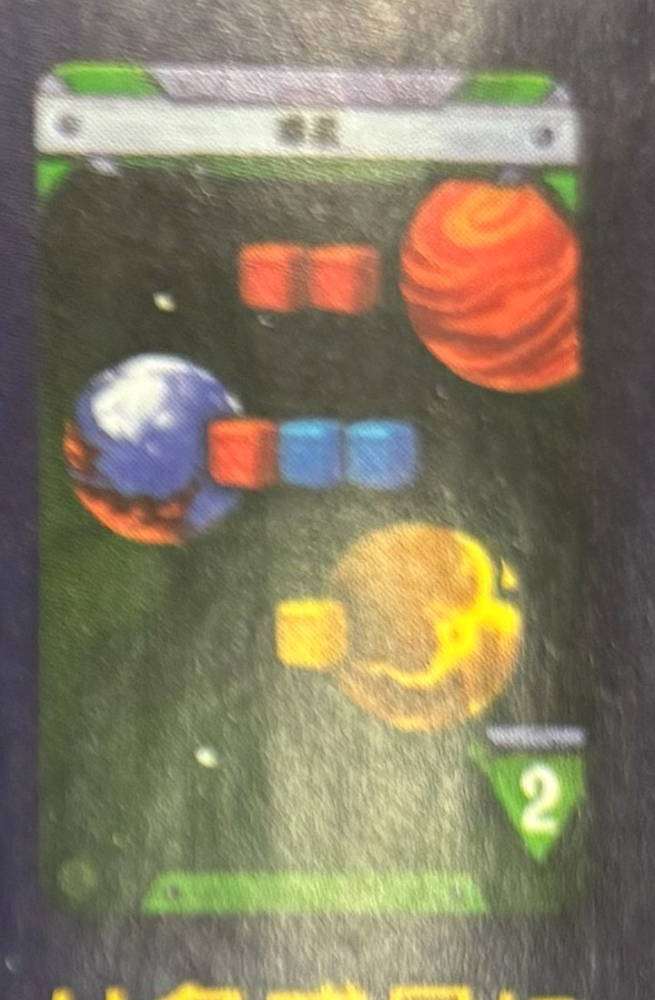
01惑星商品を獲得① 着陸を選ぶ：先頭 → 後ろ。各プレイヤーは空いている惑星を1つ選ぶか、見送る。着陸する惑星には、宇宙船ボード上のもう1個のロケットを置く。各惑星に置けるロケットは1個だけ。
② 商品を積む。着陸した人は、その惑星の商品を獲得する。この時点で手持ちの商品を移動・入れ替え・廃棄してよい。
③ 航海日数を失う：後ろ → 先頭。カード右下の日数だけ航海ボード上を後退する。
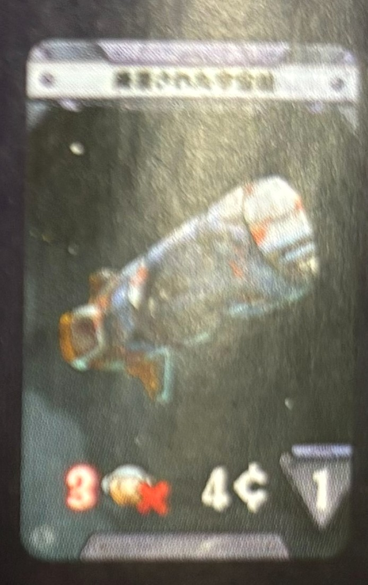
02廃棄された宇宙船乗組員と引き換え先頭から順に選択し、利用できるのは1人だけ。利用するなら、カード左下に示された人数の乗組員を宇宙船から実際に取り除く。
乗組員を失う→クレジット獲得→航海日数を失う
誰かが利用した時点で、後ろのプレイヤーには選択権が回らない。
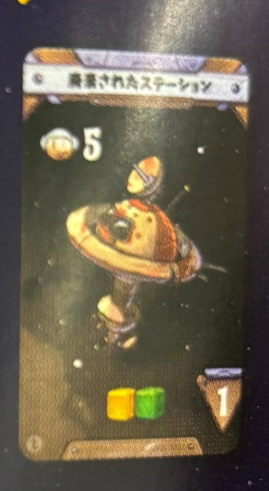
03廃棄されたステーション乗組員数を確認先頭から順に選択し、利用できるのは1人だけ。カード左上に示された人数以上の乗組員がいれば利用できる。
乗組員数は利用条件。乗組員は失わない。カードの商品を積み、右下の航海日数だけ後退する。
誰かが利用した時点で、残りのプレイヤーは利用できない。
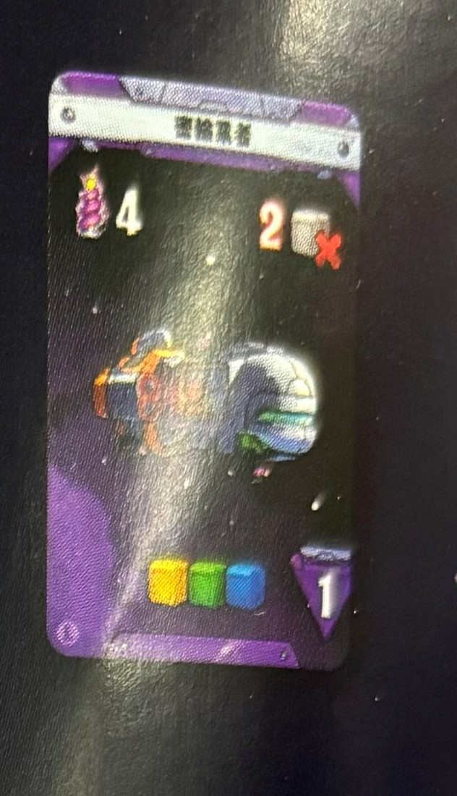
04密輸業者レーザー砲で戦闘先頭から順に1人ずつ戦う。自分のレーザー砲パワーを計算し、ダブルレーザーを使うならこの時点でバッテリーを支払う。
誰かが撃退した時点で戦闘終了。後ろのプレイヤーは攻撃されない。
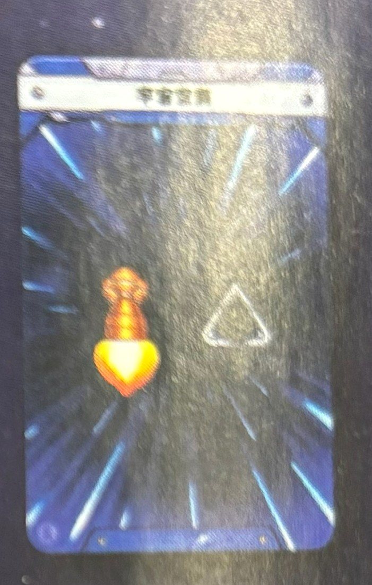
05宇宙空間エンジンで前進先頭から順にエンジンのパワーを宣言。ダブルエンジンを使うなら、宣言時にバッテリーを支払う。
宣言した数だけ航海ボードの空きスペースを前進する。他のロケットがいる場所は数えずに飛ばすため、追い越しも起こる。
このカードの解決後にエンジンパワーが0なら、航海を断念する。
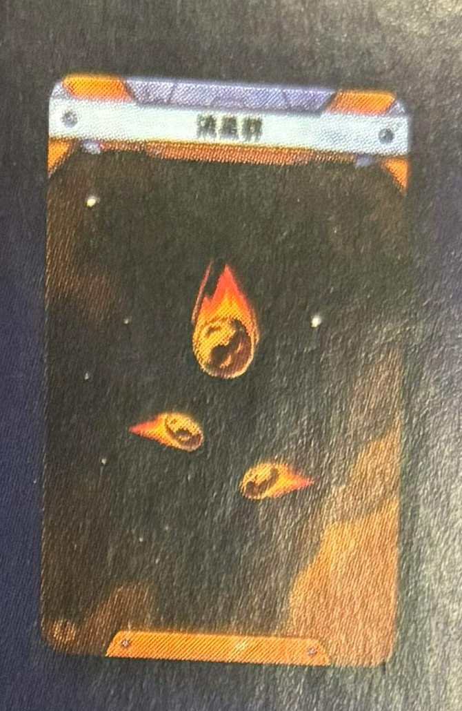
06流星群流星を処理カードの上から1個ずつ、全員同時に処理。流星ごとにリーダーがダイス2個を振り、合計値で飛来する行／列を決める。該当する行・列がなければ外れ。
小流星外装面なら無傷で跳ね返る。露出コネクタへの直撃だけ、その方向のシールド＋バッテリー1個で防げる。
大流星シールドでは防げない。同じコース上で、飛来方向を向くレーザー砲を使って撃墜する。ダブルレーザーならバッテリー1個。撃墜できなければ命中パーツを破壊。
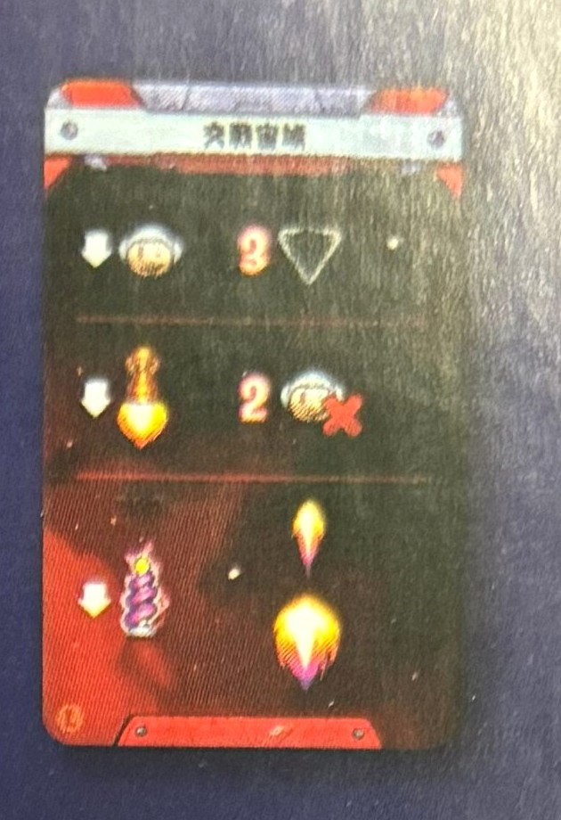
07交戦宙域最下位を判定カードの3項目を上から順番に、毎回あらためて判定する。
同点最下位が複数なら、その中で航海ボード上の最も前の1人だけがペナルティを受ける。
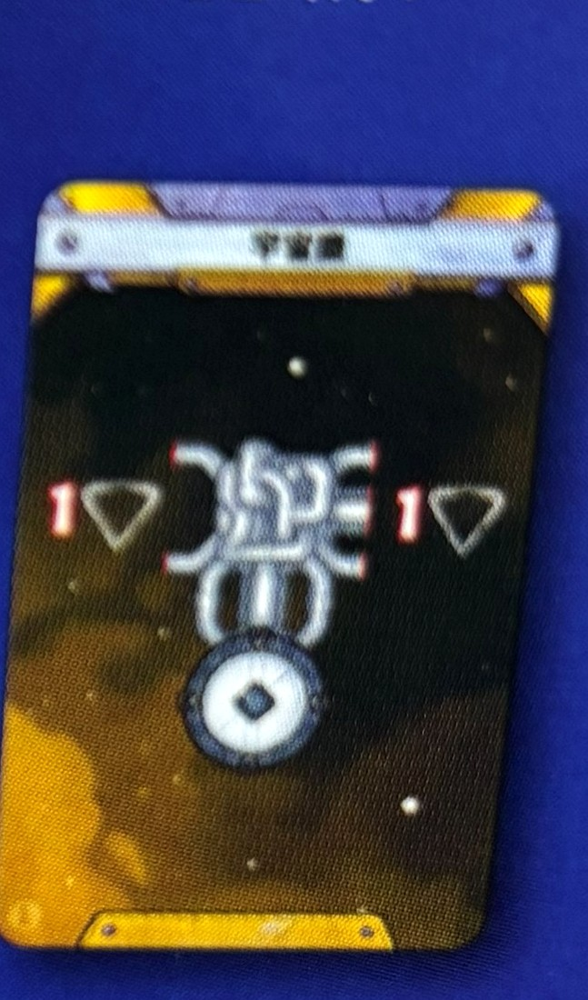
08宇宙塵露出面を数える露出コネクタ1面 = 航海日数1日。パイプの本数ではなく、コネクタが外に出ている「面」を数える。
最後尾から先頭へ、通常と逆順で処理。各プレイヤーは露出面の数だけ、航海ボード上の空きスペースを後退する。
該当する項目がありません。短い語で検索してください。
05 / 損傷
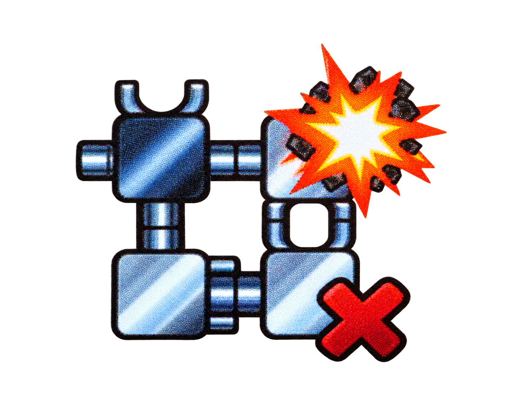
命中タイルを外し、本体との接続を失ったパーツもすべて落下。
失ったパーツ ×1−1クレジット
弱：攻撃方向のシールド＋バッテリーで防御。
強：シールドでは防げない。命中パーツを破壊。
商品 / 乗組員 / 航海断念
商品を得た瞬間は、古い商品を移動・入れ替え・廃棄できる。
赤だけは特別貨物室。
価値の高い順：赤 4 → 黄 3 → 緑 2 → 青 1
不足1個につきバッテリートークン ×1。商品も電池もなければ、それ以上失わない。
地球人0／宇宙空間でエンジン0／先頭より1周遅れ。
現在のカードを最後まで解決してから判定。自主的な断念は次カード公開前だけ。
ロケットを航海ボードから外し、以後のカードの影響を受けない。順位報酬と「最も美しい宇宙船」の対象外。商品は通常価格合計の半額、端数切り上げ。損害は支払う。
1人だけ残ったら、以後の《交戦宙域》と《破壊工作》はカードごと無視して1人でゴールを目指す。
06 / 精算
最多クレジットの人は、ほかの勝者より「少しだけ優秀」。
初回航海 完了
ここまで遊べれば、基本はもう理解できている。
練習航海の次は、航海の難しさを選び、制限時間内に宇宙船を造ります。下の項目を上から確認すれば準備できます。
最初に、全員で今回の難しさをレベルⅠ・Ⅱ・Ⅲから1つ選びます。数字が大きいほど、大きな宇宙船を造り、長く危険な航海に挑みます。全員が、選んだ数字と同じ航海ボードと宇宙船ボードを使います。
砂時計は「残り時間」を全員で共有する道具です。建造開始と同時に、航海ボードの砂時計マークがある開始位置へ置き、砂を落とし始めます。
レベルⅠ：途中の位置を使わず、最初の砂が落ち切った時点で、完成した人が最後の位置へ進められます。
宇宙船にパーツを1枚以上取り付けた後は、航海ボード下側に置いた3組のカードを確認できます。どんな冒険が起きやすいかを見て、エンジン・レーザー砲・貨物室などの数を調整しましょう。
見てはいけないカード：航海ボード上側に置いた1組は秘密です。建造が終わるまで誰も確認できません。
今は置けないものの、あとで使いたいパーツは、自分の宇宙船ボード右上にある取り置き場所へ置けます。
紫・茶色の生命維持システムは、それだけでは何も起こりません。同じ色の異星人を乗せたい船室へ、コネクタで正しくつなげて使います。
紫の異星人：宇宙船にもともとレーザー砲のパワーが1以上あれば、合計に+2します。
茶色の異星人：宇宙船にもともとエンジンのパワーが1以上あれば、合計に+2します。
異星人も乗組員1人として数えます。生命維持システムとの接続が切れたら、その異星人は宇宙船から降ろして共通の置き場へ戻します。
カードは先頭プレイヤーが1枚ずつめくり、書かれている項目を上から順に処理します。次のカードは、すべての項目が終わってからめくります。
側面・後方からの大流星：飛来方向を向き、同じ行・列または隣の行・列にあるレーザー砲で撃墜する。
敵が出るカード：先頭の宇宙船から順番に戦います。誰かが敵を倒した時点で、そのカードの戦闘は終了です。勝った人は報酬を受け取らなくてもかまいません。受け取る場合だけ、カードに書かれた日数ぶん航海ボード上で後退します。通常のエンジン・レーザー砲と異星人の能力は、使わないことを選べません。
奴隷狩り：敗北するとカード記載数の乗組員を選んで失う。勝利報酬はクレジット。
宇宙海賊：敗北したプレイヤー全員が砲撃を受ける。最初に敗北した人が各砲撃についてダイスを振り、その結果を敗北者全員に適用する。勝利報酬はクレジット。
疫病：他の使用中の船室と接続している各船室から、乗組員を1人ずつ失う。
破壊工作：乗組員が最少の宇宙船が対象。同点ならその中で最も先頭の1人。ダイス2個で列、もう一度ダイス2個で行を決め、パーツがなければ最大3組まで振り直す。3組とも外れなら何も起きない。
商品不足：商品は先頭から順に積む。前の宇宙船が捨てた商品は後ろの宇宙船が使える。商品が足りなくても航海日数は失う。
これは本格航海に必須のルールではなく、3回の航海を1つのゲームとして続ける選択ルールです。レベルⅠ・Ⅱ・Ⅲを順番に飛び、獲得したクレジットと称号だけを次の航海へ持ち越します。宇宙船は毎回造り直します。
1回目は「最も美しい宇宙船」の代わりに、航海を完了した宇宙船だけで称号を判定する。各称号の最高得点者全員が2クレジットを得るが、称号タイルを受け取るのは同点者のうち最も先にゴールした1人だけ。全員0点なら先頭の完走者がタイルだけを得る。誰も完走しなければ報酬はなく、称号を各プレイヤーへランダムに配る。
複数称号を得た人は1枚だけ残し、称号を持たない人へ残りを分配する。1回目を断念した人も含め、全員が称号を1枚持って2回目を始める。
2回目のレベルⅡで称号を防衛すると4クレジットを得て金面へ。3回目のレベルⅢでは銀面の防衛で6クレジット、金面の防衛で12クレジット。最後に最多クレジットの人が「究極のトラッカー」となり、同点決勝は行わない。